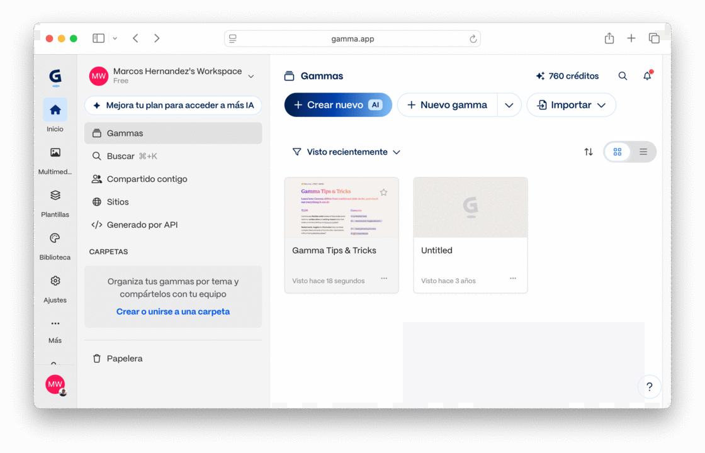
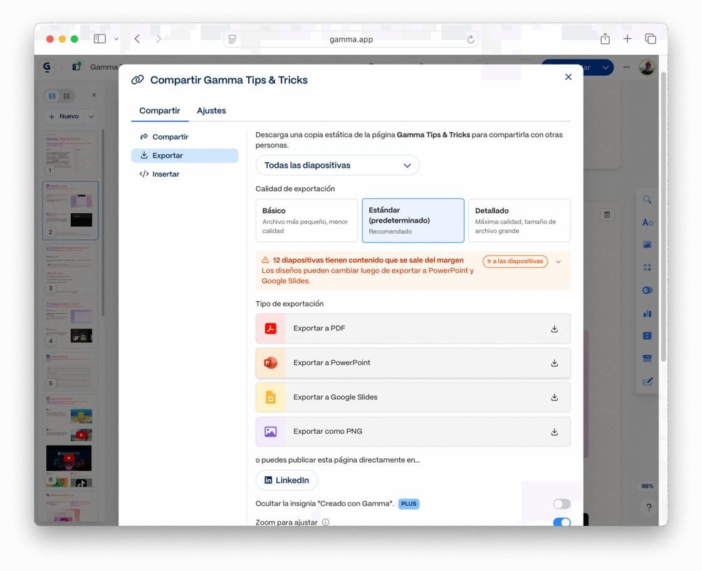
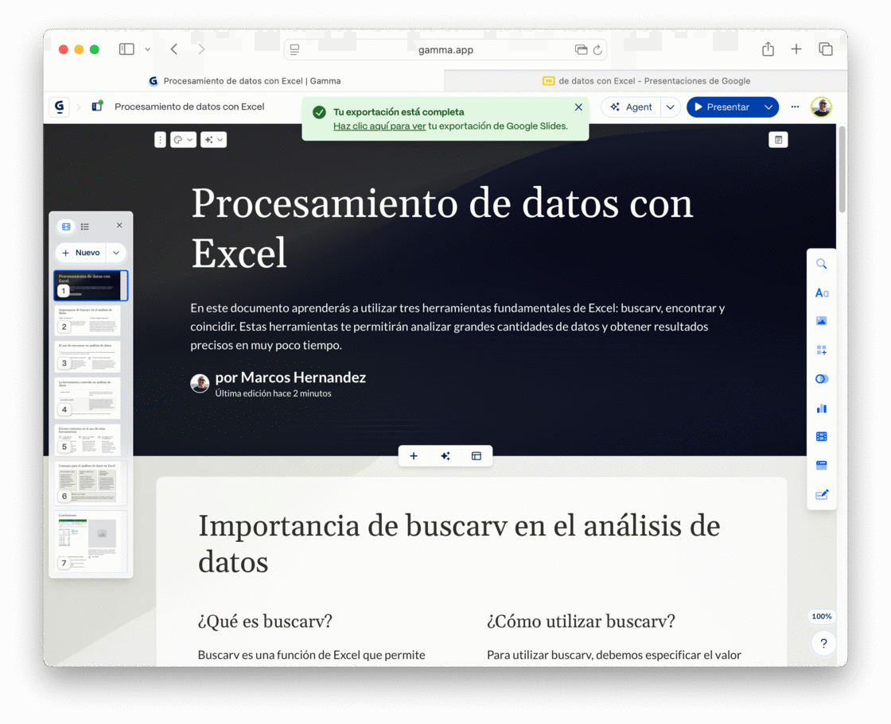
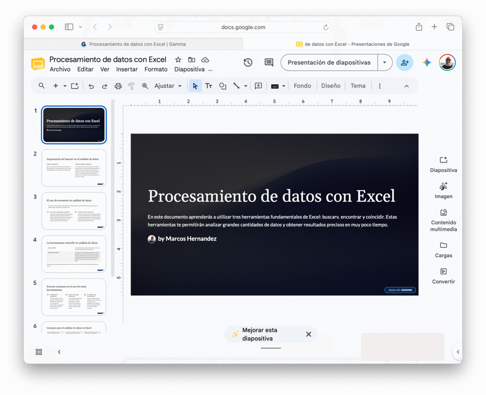
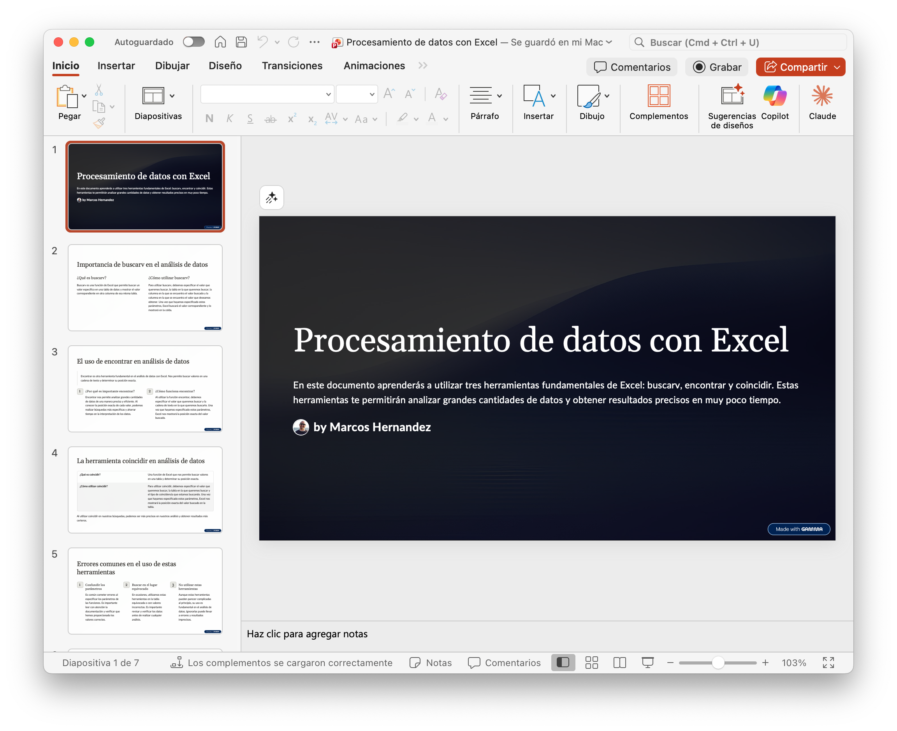

Storytelling: contá una historia
Tu Trabajo de Investigación está ordenado para argumentar (introducción, desarrollo, conclusión), la estructura que sostiene un texto académico. Pasado a diapositivas en ese mismo orden, no alcanza para sostener la atención de la sala: una presentación no se lee, se ve y se escucha, al ritmo que marcás con la voz. Eso es un problema distinto, y tiene una solución con nombre propio: storytelling, la técnica de organizar contenido real (no ficción) como una historia para sostener la atención de quien escucha, con un arco narrativo. No hace falta inventar una historia que no está en tu Trabajo de Investigación, hace falta elegir, entre los datos que ya tenés, cuál abre la exposición, cuáles la sostienen, y cuál la cierra.
Tres tramos, no diez: una presentación con arco narrativo abre con tensión, la sostiene con evidencia y cierra resolviéndola, el mismo orden sirve para un Trabajo de Investigación de cualquier carrera.
Gancho
La primera diapositiva de contenido (después de la portada) no es un índice ni un resumen del tema, es una pregunta sin responder, un dato incómodo o una tensión que el público quiere ver resuelta. Le da una razón para seguir mirando.
Qué NO hacer, y por qué: abrir con "Índice" o "Introducción" como primera diapositiva de contenido. El público todavía no tiene motivo para prestar atención, se lo diste recién en la diapositiva 4, cuando ya se dispersó.
Desarrollo
No repite el orden de las secciones del documento, sigue el orden que mejor construye hacia el cierre: de lo conocido a lo sorprendente, de la evidencia más simple a la más contundente, o de un antes a un después. El documento se ordena para argumentar en el papel; la presentación se reordena para sostener el oído.
Qué NO hacer, y por qué: pegar las secciones del Trabajo de Investigación en el mismo orden en que quedaron escritas, porque "así ya está organizado". Lo que ordena un texto para argumentar no es lo mismo que sostiene la atención de una sala.
Cierre
La última diapositiva de contenido vuelve a la pregunta o tensión del gancho y la resuelve con una sola idea, la que querés que el público recuerde mañana. No es un resumen de todo lo dicho ni una diapositiva de "Gracias".
Qué NO hacer, y por qué: terminar con "Gracias" o "Preguntas" como última diapositiva de contenido. Es el momento de mayor atención de toda la exposición, dejarlo vacío desaprovecha justo lo que más se recuerda.
💡 Idea clave
El arco narrativo funciona igual en toda la presentación que en una sola diapositiva bien armada: una sola pregunta o tensión abre el mazo, y una sola conclusión lo cierra. Todo lo del medio existe para llevar de una a la otra.
📙 Paso a paso: Prompt para encontrar tu arco (RTCFL adaptado)
- Rol: "Actuá como editor de presentaciones, especializado en storytelling."
- Tarea: "Leé mi Trabajo de Investigación y proponeme un arco narrativo para exponerlo: qué gancho podría abrir la exposición, qué 3 o 4 ideas del desarrollo lo sostienen mejor, y qué idea central debería quedar como cierre."
- Contexto: subí el PDF de tu Trabajo de Investigación (o pegá el texto, si la herramienta no acepta archivos).
- Formato: "Respondé en tres partes, en este orden: Gancho, Desarrollo (lista de ideas) y Cierre: cada una en una o dos oraciones, no un párrafo largo."
- Límites: "No inventes datos que no estén en el documento. Si no encontrás un gancho llamativo, decímelo en vez de inventar uno."
Encontrar tu arco con IA
- Subí el PDF de tu Trabajo de Investigación a una IA que acepte archivos (por ejemplo ChatGPT, Claude, Gemini o NotebookLM).
- Armá el prompt con RTCFL adaptado, como en el paso a paso de arriba.
- Leé la propuesta de la IA con ojo crítico: ¿el gancho que eligió es realmente lo más interesante que tenés, o el dato más fácil de encontrar? ¿el cierre resuelve ese gancho, o es un resumen genérico de todo el trabajo?
- Ajustá lo que no te convenza: el arco final lo decidís vos, la IA solo te dio un primer candidato.
- Anotá tu gancho, tus 3 o 4 ideas de desarrollo y tu cierre en un lugar a mano: los vas a necesitar para el prompt del esquema, en la sección "Generar el borrador con IA".
La estructura del arco define qué contás y en qué orden, pero un buen arco se puede arruinar en la entrega. Dos prácticas simples cuidan esa otra mitad.
Mirá al público, no la pantalla
Tu cuerpo y tu mirada apuntan a las personas que te escuchan, no a la diapositiva. Si necesitás recordar el orden, usá las notas del orador. El puntero láser, si lo usás, se enciende solo para señalar algo puntual.
Qué NO hacer, y por qué: leer la pantalla de principio a fin sin levantar la vista, con el láser prendido todo el tiempo sin señalar nada. El público nota enseguida cuándo el expositor perdió la conexión con la sala.
Respetá el tiempo asignado
Un tiempo de exposición es un límite, no una sugerencia, practicá antes con cronómetro y ajustá el contenido para entrar cómodo. El celular queda en silencio y fuera de la mano durante toda la exposición.
Qué NO hacer, y por qué: extenderte todo lo que puedas "porque hay más para contar", o interrumpir tu propia exposición para atender el celular. Los dos casos le dicen al público que su tiempo importa menos que el tuyo.
Con el arco resuelto y la entrega cuidada, falta el paso más mecánico: traducir ese contenido a diapositivas concretas, qué se lleva del documento y qué no, tema de la próxima sección.
Diseño visual: cómo se compone una diapositiva
Copiar y pegar párrafos enteros del Trabajo de Investigación a las diapositivas es el error más común en una primera presentación. Un documento se lee: quien lo tiene enfrente controla el ritmo, puede releer una frase, volver atrás. Una presentación se ve y se escucha: el público tiene unos segundos por diapositiva, al ritmo que vos marcás con la voz. Si una diapositiva tiene un párrafo entero, nadie la lee, y mientras tanto, dejan de escucharte a vos. Reducir el texto es la mitad del trabajo; la otra mitad es cómo se ve lo que queda, y eso también es diseño, no hace falta ser diseñador para hacerlo bien.
💡 Idea clave
Cada diapositiva necesita una idea, no un párrafo. Si no podés resumir la diapositiva en una frase corta, son dos diapositivas, no una: elegí 3 a 5 palabras clave y decí el resto con tu voz, en vez de leerla palabra por palabra.
Del documento a la diapositiva
| En el documento (Clase 04-05) | En la presentación |
|---|---|
| Título de sección (Encabezado 1/2 en Docs, Título 1/2 en Word) | Título de diapositiva |
| Párrafo de desarrollo | 3 a 5 palabras clave, o una frase corta |
| Tabla completa | Versión resumida, o un gráfico simple |
| Cita APA completa (Apellido, año) | Mención breve del autor en pantalla, la cita completa queda en el documento, no en la diapositiva |
| Imagen anclada dentro del texto | Imagen a pantalla completa o al costado, sin texto que compita con ella |
Ese mismo criterio de cita se sostiene en la presentación: toda afirmación que tomaste de una fuente lleva su crédito en pantalla, aunque sea abreviado, el mismo estándar que ya usás en el documento, solo que resumido. Presentar datos o ideas ajenas como propias sin decir de dónde salen es el mismo problema que el plagio en un texto escrito, solo que en una exposición oral nadie te lo puede señalar en el momento.
Reducido el contenido al mínimo, todavía falta cómo se ve: una diapositiva prolija no es la que tiene más colores ni la plantilla más elegante, es la que el público entiende de un vistazo, y eso no depende del gusto personal sino de un puñado de principios de composición simples. Uno de los métodos más conocidos para aplicarlos junta cuatro en una sigla poco elegante pero fácil de recordar: CRAP (Contraste, Repetición, Alineación, Proximidad). No es el único camino para pensar el diseño visual, pero alcanza y sobra para una diapositiva académica, y es el que vas a usar en esta clase.
Contraste
Dos elementos que cumplen roles distintos tienen que verse evidentemente distintos, no parecidos "por las dudas". Entre texto y fondo hace falta una diferencia fuerte de luminosidad (negro sobre blanco, blanco sobre un color bien oscuro) y una tipografía clara, nunca decorativa ni "divertida": Comic Sans en una presentación formal le resta seriedad al contenido antes de que digas una palabra. Un título se diferencia de un subtítulo por tamaño y peso, no solo por estar arriba.
Qué NO hacer, y por qué: gris claro sobre blanco, dorado sobre amarillo, o una tipografía informal en un tema serio. Se ve elegante en la pantalla de tu computadora, a 40 centímetros de tus ojos, desde el fondo del aula, esa combinación se funde en un borrón ilegible, y el público deja de leer a los pocos segundos.
La misma palabra, dos contrastes: a 40 cm se leen ambas: desde el fondo del aula, solo una.
Repetición
La misma tipografía, la misma paleta de dos o tres colores, el mismo estilo de imagen en todo el mazo. La repetición no es monotonía, es lo que le permite al público reconocer "esto sigue siendo la misma presentación" sin tener que pensarlo.
Qué NO hacer, y por qué: cambiar de tipografía o de paleta entre diapositivas porque "esta combinación quedaba mejor para este tema en particular". Cada cambio sin motivo le pide al cerebro del público que se reoriente, y ese esfuerzo le resta atención al contenido.
Alineación
Cada texto y cada imagen se alinean a una grilla invisible: al margen izquierdo, al centro, a un borde en común con otro elemento. Nada queda "flotando" a ojo.
Qué NO hacer, y por qué: mover un cuadro de texto un poco para un lado porque "quedaba mejor así", sin fijarse si coincide con algo más en la diapositiva. El desorden se nota aunque no sepas explicar por qué.
Cuatro elementos sueltos a ojo, versus los mismos cuatro anclados a un margen invisible en común.
Proximidad
Lo que está relacionado va junto; lo que no, se separa con espacio. La distancia entre dos elementos le dice al ojo si son parte de la misma idea o de dos ideas distintas, antes de leer una sola palabra.
Qué NO hacer, y por qué: repartir varios elementos sueltos a la misma distancia entre sí, sin agrupar los que van juntos. El público no sabe por dónde empezar a mirar.
💡 Idea clave: jerarquía visual
La jerarquía visual es el orden en que el ojo recorre la diapositiva, y lo define el tamaño y el contraste: lo más grande y con más contraste es lo primero que se mira. Si el título y la imagen central compiten en tamaño, el público no sabe qué mirar primero. Dale al elemento más importante de cada diapositiva el mayor tamaño y el mayor contraste, sin excepciones, es la misma idea de "una idea por diapositiva" que ya vimos más arriba en esta sección, aplicada ahora al diseño.
⚠️ El color no alcanza solo
Si usás colores para diferenciar datos (por ejemplo, dos barras de un gráfico), agregá también una etiqueta de texto o un patrón distinto. Parte del público no distingue bien ciertos colores entre sí, y sin una segunda pista pierde la diferencia por completo.
🔎 Para hacer ahora: la prueba del fondo del aula
Abrí una diapositiva de tu esquema (o cualquier diapositiva vieja tuya, si todavía no generaste el borrador) e imaginate sentado en el último banco, lejos del proyector. Contestá a ojo: ¿el título se lee sin esforzar la vista? ¿hay una sola idea, o tenés que elegir qué mirar? ¿el color de fondo compite con el texto? ¿todo está alineado a algo, o hay algo "flotando"? Si alguna respuesta te preocupa, corregila ahí mismo, no importa cuánto "linda" te parezca en la pantalla de tu compu. Esta prueba, no el gusto personal, es la que decide si una diapositiva funciona.
Estos cuatro principios son los que le vas a pedir a la IA que respete desde el primer prompt, y los mismos que vas a chequear con tus propios ojos antes de exportar, aparecen otra vez en las próximas dos secciones.
Generar el borrador con IA
Vas a usar una IA para pasar de documento a estructura de diapositivas, no para que la IA "haga la presentación entera", sino para no arrancar de la hoja en blanco. No hay una herramienta "correcta" para esto: cada una tiene un modelo de costo distinto (gratis, freemium o de pago) y conviene elegir la que mejor se adapte a tu situación, no la más nombrada.
Las herramientas de IA para presentaciones cambian rápido, la que sirve mejor hoy puede no ser la mejor opción en unos meses, y varias ajustan su plan gratuito seguido. Por eso el flujo de esta clase no se apoya en una sola herramienta: elegís dos de la lista de abajo según tu situación (cuenta institucional, presupuesto, o simple curiosidad), probás el mismo pedido en ambas, comparás y elegís con criterio propio. Es una habilidad más duradera que memorizar los botones de una app puntual.
| Herramienta | Costo | Cómo se usa acá |
|---|---|---|
 Gamma ( Gamma (gamma.app) | Freemium: plan gratis real (hasta 10 diapositivas por pedido), plan pago con más diapositivas por pedido y funciones extra. | Generá un mazo completo pegando el texto o un outline. Exporta directo a .pptx, PDF o Google Slides con un clic, elegí el destino según dónde quieras seguir editando en la próxima sección. |
 Gemini Notebook Studio Gemini Notebook Studio | Gratis con cuenta Google (ver Clase 03). | Si ya cargaste tu Trabajo de Investigación como fuente, pedile una guía de estudio o un resumen por puntos, sirve como esquema de partida. |
 Canva ( Canva (canva.com) (Magic Studio | Freemium: el plan gratis alcanza para maquetar a mano con plantillas, pero la generación con IA (Magic Studio) tiene usos limitados por mes) el resto requiere plan pago. | Pegá tu documento y generá un primer diseño con Magic Studio; después lo ajustás a mano con las plantillas del plan gratuito. |
 Pitch ( Pitch (pitch.com) | Freemium: plan gratis "para siempre" pensado para uso individual, con créditos de IA incluidos por mes. | Generá el esquema con IA y editá directo en el navegador, buena opción si no tenés cuenta institucional de Google ni de Microsoft. |
 Beautiful.ai ( Beautiful.ai (beautiful.ai) | De pago, 1 año gratis con mail .edu.ar. | Cada elemento se reacomoda solo al editar (diseño adaptativo), útil para ver ese enfoque distinto, y con tu mail de la UNQ accedés gratis un año, como se explica a la izquierda. |
Otras seis opciones, para comparar sin entrar en tanto detalle, confirmá el modelo de costo actual antes de decidirte, porque cambia seguido:
- Slidesgo AI (
slidesgo.com): Freemium: pocas generaciones con IA gratis por mes, después plan pago. - Tome (
tome.app), Freemium, pero la generación con IA no está en el plan gratis: hace falta plan pago para esa parte. - Visme (
visme.co) (Freemium con créditos de IA limitados; promociona un plan para estudiantes, pero al momento de escribir esto la página no muestra precio ni condiciones de autogestión) confirmá con soporte antes de contar con ese descuento. - Decktopus (
decktopus.com): De pago, sin plan gratis; ofrece un código de descuento para estudiantes. - Gemini (dentro de Google Slides) (De pago (Google AI Pro), con un año gratis para universitarios argentinos mayores de 18) ver el detalle abajo antes de activarlo.
- Microsoft Copilot (dentro de PowerPoint), De pago: no viene incluido en la cuenta gratuita @uvq.edu.ar de la Clase 05. Se consigue con el 50% off en Microsoft 365 Personal para estudiantes (o con una licencia de Microsoft 365 Copilot aparte), sin versión gratuita para esta función.

 Gemini en Slides, gratis para estudiantes
Gemini en Slides, gratis para estudiantes
Buena noticia si te interesa este asistente: Google ya ofrece, ahora mismo, un año sin costo de su plan de IA paga (la propia página de Google lo nombra a veces "AI Pro" y a veces "AI Plus", no son consistentes) a universitarios de Argentina mayores de 18 años, el plan que habilita el panel de Gemini en Presentaciones de Google (el que arma diapositivas con @ + tu documento, y que hasta ahora no venía con una cuenta de Google gratuita). Anotate en gemini.google/students y verificá tu condición de alumno regular. La promoción actual se puede activar hasta el 31 de diciembre de 2026, viene de una versión más amplia que Google ya ofrecía para toda Hispanoamérica desde octubre de 2025, así que es esperable que la renueve, pero no hay garantía: anotate ya y asegurate el año gratis con las condiciones de hoy en vez de esperar. Ojo con la letra chica: piden una tarjeta válida al registrarse (no cobra durante el año gratis, pero pasa sola a plan pago si no la cancelás antes de que termine), y aunque Google confirma Gemini en Gmail y Documentos con ese plan, no siempre nombra Presentaciones de forma explícita, si te lo activás, confirmá vos que el panel te aparezca en Slides antes de apoyarte en él para una entrega. Sigue sin ser la herramienta obligatoria de esta clase, pero ya no es descartable solo por precio.

El panel de Gamma al entrar: "Crear nuevo" arranca el asistente de IA que arma el mazo completo a partir de tu texto.

Compartir → Exportar: elegí PowerPoint o Google Slides según dónde quieras seguir editando. Calidad "Estándar" alcanza para esta actividad.

Al terminar, Gamma avisa y te deja el link directo a la copia recién creada en Google Slides.
📙 Paso a paso: Prompt para el esquema (RTCFL adaptado)
- Rol: "Actuá como diseñador de presentaciones académicas."
- Tarea: "Convertí este documento en un esquema de 8 a 10 diapositivas con arco narrativo: no sigas el orden del documento, proponé un gancho que abra con una pregunta o tensión, un desarrollo que la sostenga, y un cierre que la resuelva."
- Contexto: pegá el texto de tu Trabajo de Investigación (o el link, si la herramienta lo permite).
- Formato: "Un título + máximo 3 bullets de hasta 5 palabras por diapositiva. Contraste alto entre texto y fondo, sin combinar colores parecidos entre sí."
- Límites: "No más de 10 diapositivas. Una sola idea central por diapositiva. No inventes datos o conclusiones que no estén en el texto."
💡 Idea clave: prompt pobre vs. prompt con RTCFL
Prompt pobre: "Haceme una presentación sobre mi tema.", la IA no sabe el tono, el largo, el diseño ni qué evitar, así que inventa todo eso por vos. Prompt con RTCFL: "Actuá como diseñador de presentaciones académicas. Convertí este documento en un esquema de 8 a 10 diapositivas con arco narrativo (gancho, desarrollo y cierre), un título + máximo 3 bullets de hasta 5 palabras cada una, con contraste alto y una sola idea central por diapositiva. No inventes datos que no estén en el texto: [pegás el documento].": mismo pedido, pero con rol, límites, formato y los principios de diseño y de arco narrativo de las secciones anteriores explícitos. El resultado necesita mucha menos edición manual después.
⚠️ Advertencia
La IA no sabe qué es visualmente importante para vos, no sabe qué imagen tenés, ni cuánto tiempo vas a hablar de cada punto. Revisá diapositiva por diapositiva y editá: el esquema generado es un punto de partida, no el resultado final.
Generar y comparar el esquema
- Abrí tu Trabajo de Investigación.
- Armá el prompt con RTCFL adaptado, como en el paso a paso de arriba.
- Probá ese mismo prompt en dos herramientas de la tabla de arriba, elegidas según tu situación, por ejemplo, una sin registro especial (Gamma o Pitch) y otra con tu cuenta institucional de UNQ (Gemini Notebook), o cualquier otro par que tenga sentido para vos.
- Compará los dos resultados contra los principios de diseño visual y de arco narrativo de las secciones anteriores: ¿cuál respeta mejor el contraste? ¿cuál te deja menos texto para borrar? ¿cuál pasa mejor la prueba del fondo del aula? ¿cuál arranca con un gancho en vez de un índice, y cierra resolviéndolo en vez de terminar en "Gracias"?
- Elegí el mejor de los dos como punto de partida y revisalo diapositiva por diapositiva contra tu documento: ¿la idea central está bien representada? ¿sobra texto?
- Elegí tu editor final: Google Slides o PowerPoint, según a dónde exportó mejor tu herramienta (Gamma exporta directo a los dos). Nombrá el resultado
Presentación Integradora - V01y guardalo en la subcarpeta "Clase 06".
 Actualizá tu LinkedIn
Actualizá tu LinkedIn
Generación de presentaciones asistida por IA: usar una herramienta generativa para pasar de documento a esquema de diapositivas, comparar el resultado entre dos herramientas distintas, y revisar y editar con criterio propio, no aceptar el primer resultado tal cual sale.
Tema, transición y animación
Con el esquema ya armado, ahora el diseño manual: tema, diapositivas, transiciones y animaciones. No importa si tu esquema llegó a Google Slides o a PowerPoint, son los mismos cuatro pasos con otro nombre de menú, y el resultado final es equivalente. No hay una herramienta "correcta": las dos llegan al mismo lugar.

Así llega el esquema a Google Slides: el punto de partida para el trabajo manual de esta sección, no el resultado final.
Tema y diseño
| Acción | ||
|---|---|---|
| Cambiar el tema | Diapositiva → Cambiar tema. Se puede cambiar en cualquier momento, no solo al principio. | Diseño → elegís un tema de la galería. |
| Insertar diapositiva | Ícono +, eligiendo un diseño o diapositiva en blanco. | Inicio → Nueva diapositiva, o Ctrl+M (Mac: ⌘+M). |
| Duplicar / eliminar | Clic derecho sobre la miniatura → Duplicar diapositiva / Eliminar diapositiva. | Igual: clic derecho sobre la miniatura. |
| Insertar elementos | Insertar → cuadro de texto, imagen, formas, líneas, para cuando ningún diseño predefinido alcanza. | Insertar → mismo menú, mismos elementos. |
Transiciones y animaciones
Una transición es el efecto de cambio entre dos diapositivas. Una animación es el efecto con el que aparece un objeto dentro de la misma diapositiva, con un disparador: al hacer clic, después de la anterior, o con la anterior. En Google Slides, ambas están en el menú Insertar → Transición / Animación; en PowerPoint, en las pestañas "Transiciones" y "Animaciones" de la cinta de opciones.
⚠️ Atención
Usar una transición distinta en cada diapositiva, o animar cada bullet con un efecto diferente, es la marca visual de una presentación poco profesional. Elegí una transición y aplicala a todas; elegí una lógica de animación y repetila.
💡 Consejo
Cuanto más formal la presentación, más sobria la transición. El orden de aparición de las animaciones dentro de una diapositiva se puede reordenar arrastrando en el panel lateral (Slides) o en el "Panel de animación" (PowerPoint).
Aplicar diseño y movimiento
- En tu
Presentación Integradora - V01, elegí un tema consistente con el contenido (tabla de arriba, según tu editor). - Aplicá la misma transición a todas las diapositivas.
- En al menos 2 diapositivas, agregále una animación de aparición a un elemento (texto o imagen), con disparador "Al hacer clic".
- Insertá al menos 1 imagen relevante, podés reusar la del Trabajo de Investigación.
- Repasá tu mazo completo contra la prueba del fondo del aula de la sección anterior.
Exportar la presentación
Si terminaste en Google Slides, necesitás bajarla: Presentaciones de Google no funciona sin conexión, y si falla el wifi del aula o el proyector no tiene navegador, no podés exponer desde slides.google.com. Si ya terminaste en PowerPoint de escritorio, este paso es más corto, el .pptx ya lo tenés, solo falta el respaldo en PDF.
| Formato | Para qué sirve |
|---|---|
PowerPoint (.pptx) | Formato recomendado para exponer sin conexión, desde PowerPoint o el visor que tenga la máquina del aula. |
Respaldo si .pptx falla o no hay PowerPoint instalado, pierde animaciones y transiciones, pero el contenido queda intacto. | |
| JPEG / PNG / SVG | Exporta una sola diapositiva como imagen: útil para compartir una diapositiva suelta, no para exponer el mazo completo. |
En Google Slides: Archivo → Descargar → elegís el formato. En PowerPoint: Archivo → Exportar → Crear documento PDF/XPS (el .pptx ya es el archivo nativo, no hace falta descargarlo aparte).
💡 Idea clave
Nunca llegues a exponer con un solo formato. .pptx + PDF es el mínimo, si uno falla, tenés el otro.
.ppt, .pptx, .pps, .ppsx: qué significa cada extensión

Las cuatro extensiones de PowerPoint no son intercambiables por capricho, cada una define el formato del archivo y, en dos casos, también cómo se abre.
| Extensión | Qué es |
|---|---|
.ppt | Formato antiguo de PowerPoint (97-2003), binario. En desuso: si alguna vez heredás uno, convertilo a .pptx. |
.pptx | Formato actual (desde PowerPoint 2007), basado en XML. Es el que descargás desde Slides, o guardás nativamente en PowerPoint. Abre en modo edición. |
.pps | Versión "show" del formato viejo: al hacer doble clic, arranca directo en pantalla completa, en modo presentación, no en modo edición. |
.ppsx | Lo mismo que .pps, pero en formato XML actual. |
💡 Consejo
Google Slides descarga siempre en .pptx (modo edición). Si preferís que el archivo arranque directo en modo presentación al abrirlo en la máquina del aula, abrí el .pptx en PowerPoint y guardalo también como .ppsx (Archivo → Guardar como → tipo "Presentación de PowerPoint"). Si ya trabajaste todo en PowerPoint, podés guardar directo como .ppsx desde ahí.
Exportar con respaldo
- Si estás en Google Slides: Archivo → Descargar → Microsoft PowerPoint (
.pptx). Guardalo en la subcarpeta "Clase 06". Si ya estás en PowerPoint, este paso ya está resuelto, guardá el archivo directamente ahí. - Generá el PDF: Archivo → Descargar → Documento PDF (
.pdf) en Slides, o Archivo → Exportar → Crear documento PDF/XPS en PowerPoint. Mismo lugar. - Abrí el
.pptxy confirmá que se ve razonablemente bien, las animaciones pueden no ser 100% idénticas entre Slides y PowerPoint, y es normal. - Subí a la tarea de Moodle de la Clase 06: el
.pptx, el PDF, y el link de tu Google Slides compartido si trabajaste ahí.

El mismo archivo, ahora abierto en PowerPoint: así lo vas a ver en cualquier máquina del aula, con o sin conexión.
Resumen de la clase
El Trabajo de Investigación que armaste como documento hoy se convirtió en una presentación: le encontraste un arco narrativo con ayuda de una IA (gancho, desarrollo y cierre), generaste el borrador comparando dos herramientas, aplicaste los principios elementales de diseño visual (contraste, repetición, alineación y proximidad, CRAP) para que se entienda de un vistazo, le diste una estética consistente con tema y transiciones, y lo exportaste dos veces para no depender de la conexión del día de exponer.
Actividades
Referencia rápida
"frase": frase exacta-excluir: excluye un términosite:: dentro de un dominiofiletype:: por tipo de archivo2020..2026: rango de añosClaude · Copilot
Kimi
https://doi.org/10.xxxx/... al final de la cita, si existeCtrl+Alt+F (Mac ⌘+Opción+F): no reemplaza la cita APAdocs.new: lienzo en blanco al instanteCtrl+Shift+V (Mac ⌘+Shift+V): pegar sin formato, nunca directo de afueraCtrl+Alt+M (Mac ⌘+Opción+M): comentarioCtrl+Z (Mac ⌘+Z): deshacerCtrl+Alt+1: Encabezado 1Ctrl+Alt+2: Encabezado 2Ctrl+Alt+0: Texto normalCtrl+K (Mac ⌘+K): externo: pegás la URL; interno: pestaña Encabezados y marcadoresCtrl+Intro (Mac ⌘+Intro): salto de página, nunca Enter repetidoCtrl+Alt+M: insertar; clic en el comentario → Responder / ResolverCtrl+Shift+V (Mac ⌘+Shift+V): pegar sin formatoCtrl+Alt+F (Mac ⌘+Opción+F): nota al pieCtrl+Enter (Mac ⌘+Intro): salto de páginagamma.app): gratis, créditos limitados.pptx + PDF: siempre los dos.pptx/.ppsx = XML actual · .ppt/.pps = binario viejoGlosario
Técnica de organizar contenido real (no ficción) como una historia, para sostener la atención de quien escucha o lee.
Estructura en tres tramos (gancho, desarrollo y cierre) que organiza una presentación para sostener la atención, distinta del orden argumentativo de un documento.
Primera diapositiva de contenido: una pregunta, tensión o dato que le da al público un motivo para seguir mirando.
Contraste, Repetición, Alineación, Proximidad, los cuatro principios que definen si una diapositiva se entiende de un vistazo.
Orden en que el ojo recorre una diapositiva, guiado por tamaño y contraste, el elemento más importante debe ser el que más se destaca.
Efecto de cambio entre dos diapositivas. Se aplica a todas por igual para mantener consistencia.
Efecto con el que aparece un objeto dentro de una diapositiva, con un disparador (al hacer clic, después de la anterior, con la anterior).
Condición que activa una animación: un clic del expositor, o automáticamente en secuencia con la anterior.
Estructura de títulos y puntos clave generada como primer borrador, antes del diseño visual.
Formato de PowerPoint moderno (desde Office 2007), XML. Abre en modo edición.
Versión "show" de .ppt/.pptx: al abrirse arranca directo en modo presentación, no en modo edición.
Fuentes
- Duarte, N. (2010). Resonate: Present Visual Stories that Transform Audiences. Wiley. Origen del concepto de arco narrativo (gancho, desarrollo, cierre) aplicado a presentaciones.
- Storie, J. (28 de mayo de 2026). Storytelling in Presentations: 7 Tips and Examples. Duarte.
duarte.com/blog/tips-for-crafting-a-storytelling-presentation/ - Williams, R. The Non-Designer's Design Book. Origen de los principios CRAP (Contraste, Repetición, Alineación, Proximidad).
- Harvard Catalyst. Slides, Visualize Science.
catalyst.harvard.edu/writing-communication-center/visualize-science/slides - Google. Create, view, or download a file. Google Docs Editors Help.
support.google.com/docs/answer/49114 - Google. Add or change animations and transitions. Google Docs Editors Help.
support.google.com/docs/answer/1689475 - Google. Use a template or change the theme, background or layout in Google Slides. Google Docs Editors Help.
support.google.com/docs/answer/1705254